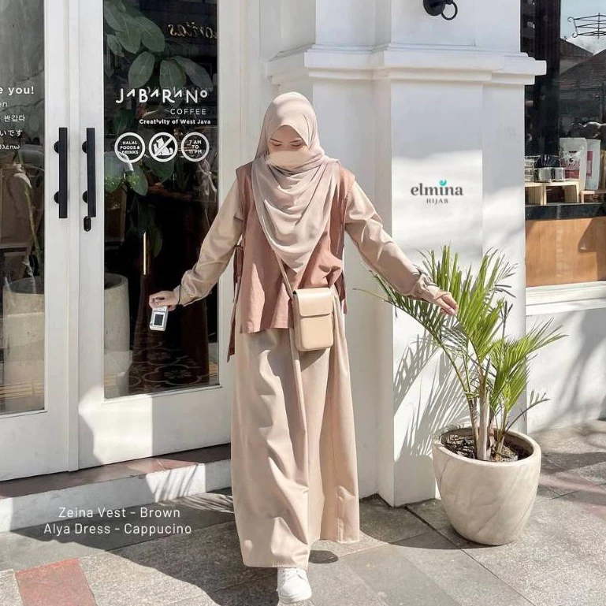

Memilih outfit gamis untuk kuliah tidak harus rumit. Kuncinya adalah mencari busana yang nyaman untuk bergerak, sesuai aturan berpakaian kampus, dan mudah dipadukan dengan barang yang sudah kamu punya. Gaya modest juga tidak harus selalu polos atau monoton—permainan warna, tekstur, dan aksesori sederhana bisa memberi karakter.
1. Gamis warna netral dan sneakers
Warna seperti hitam, navy, abu-abu, atau cokelat mudah dipadukan. Tambahkan sneakers bersih untuk perjalanan antar kelas dan pilih tas yang cukup untuk membawa buku atau laptop. Pastikan panjang gamis tidak mengganggu langkah saat berjalan.
2. Cappuccino atau beige untuk tampilan clean
Nuansa beige dan cappuccino memberi kesan rapi tanpa perlu banyak aksesori. Padukan dengan hijab senada atau satu tingkat lebih gelap agar tampilannya tidak datar. Formula ini cocok untuk hari kuliah, perpustakaan, maupun diskusi kelompok.
3. Dusty pink sebagai aksen warna
Kalau ingin warna yang lebih ekspresif, dusty pink bisa menjadi pilihan. Seimbangkan dengan hijab krem, abu-abu, atau cokelat muda. Tidak perlu semua item memiliki warna yang sama; cukup ulangi satu warna agar outfit terlihat menyatu.
4. Gamis loose dengan outer panjang
Outer ringan dapat menambah dimensi dan membantu menyesuaikan outfit dengan ruang kelas yang ber-AC. Pilih outer yang tidak terlalu tebal dan pastikan lapisannya tetap nyaman saat dipakai duduk lama.
5. Hijab praktis untuk jadwal padat
Gunakan gaya hijab yang sudah kamu kuasai agar tidak menghabiskan waktu sebelum berangkat. Perhatikan bahan, kerapian, dan kenyamanan di area kepala serta leher. Bawa peniti atau ciput cadangan jika memang dibutuhkan.
6. Gamis gelap untuk hari penuh aktivitas
Gamis navy atau hitam dapat menjadi opsi praktis ketika jadwal kuliah padat. Agar tidak terlihat terlalu formal, padukan dengan tote bag kasual dan sepatu yang nyaman. Ikuti petunjuk perawatan pada label supaya warna tetap terjaga.
7. Satu gamis, tiga suasana
Untuk kelas, gunakan gamis dengan hijab rapi dan sneakers. Untuk kajian atau organisasi, tambahkan hijab lebih panjang dan tas yang terstruktur. Setelah kelas, kamu bisa mengganti sepatu atau tas untuk suasana yang lebih santai—tanpa perlu membeli satu outfit baru.
Checklist sebelum memilih gamis kuliah
- Periksa ukuran dan panjang gamis melalui size chart.
- Pastikan bahan nyaman untuk cuaca dan aktivitasmu.
- Pilih potongan yang memberi ruang gerak dan tidak menerawang.
- Pertimbangkan kemudahan mencuci dan menyimpan.
- Utamakan kenyamanan serta aturan berpakaian kampus.
Tren modest fashion Indonesia pada 2026 banyak menyoroti busana yang fleksibel untuk berbagai kegiatan dan desain yang minimalis. Namun, tren sebaiknya menjadi inspirasi, bukan aturan mutlak. Pilih gaya yang sesuai kebutuhan dan kepribadianmu.